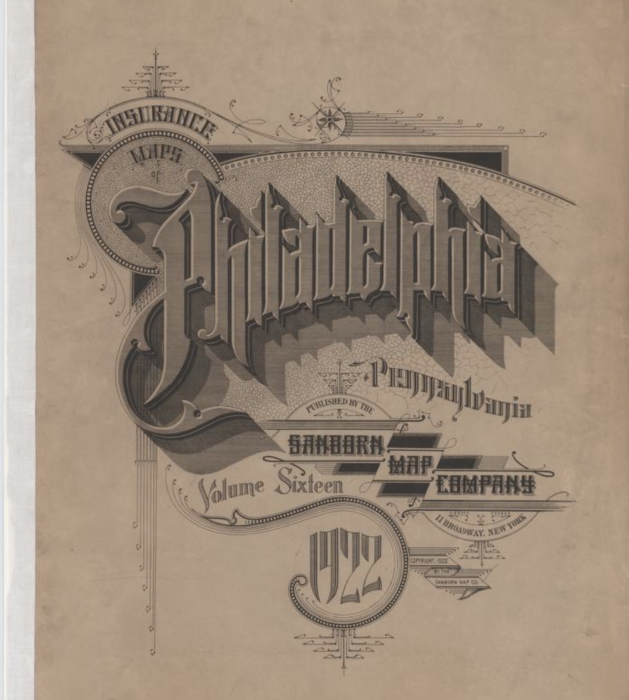

.styled-image img { width: 400px; height: 250px; border-radius: 10px; display: block; margin-left: auto; margin-right: auto;My name is Megan Cross Schmitt and welcome to my Web Portfolio. This site has been created in association with INFO 552: Introduction to Web Design for Information Organizations. The class is taught by Dr. Heather Willever-Farr in Drexel University's College of Computing & Informatics. This course is my last one before I graduate!
I decided that I wanted to become a librarian because of how much joy it brings me to connect people with the resources they are seeking. Patrons come to libraries to learn, to escape, to find answers. There is little more satisfying than having the chance to help people on their path to accomplish these things.